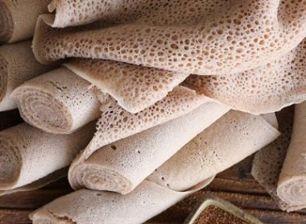

À PROPOSE DE

Le teff est naturellement sans gluten, la plus petite graine du monde est source de protéines végétales, de fer et de calcium. Elle est donc très adaptée aux régimes végétariens et vegan. Et comme elle est composée de 75% d’eau et possède un faible indice glycémique, les diabétiques et des sportifs aiment cuisiner le teff.
L’injera est une sorte de grande crêpe, caractéristique de la cuisine érythréenne et éthiopienne. C’est une galette que l’on recouvre d’une variété de sauces et qui, dans son ensemble représente le plat principal de ces deux pays.
Bref, tout le monde l’adore !
MENU
Le teff est naturellement sans gluten, la plus petite graine du monde est source de protéines végétales, de fer et de calcium. Elle est donc très adaptée aux régimes végétariens et vegan. Et comme elle est composée de 75% d’eau et possède un faible indice glycémique, les diabétiques et des sportifs aiment cuisiner le teff.